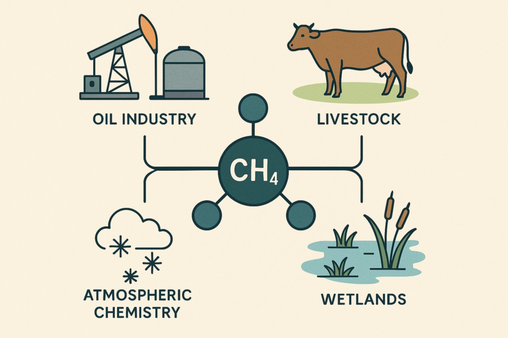

Reduced U.S. Methane Emissions during the COVID-19 Pandemic

https://doi.org/10.1039/d6ea00004e
Open access — published by the Royal Society of Chemistry.
The COVID-19 pandemic disrupted normal human activity around the world. Lockdowns and mobility reductions cut traffic, industrial output, and energy demand, and those changes were quickly visible in air quality. This study asks a less obvious question: what happened to methane (CH₄), a potent greenhouse gas with a much longer lifetime than most air pollutants?
We quantified CH₄ emissions from the contiguous United States between 2019 and 2021 using inverse modeling — that is, we started from atmospheric measurements collected at 35 sites across the country and worked backwards to estimate the surface emissions that best explain what the atmosphere was telling us.
Key Findings
- Methane emissions fell during the pandemic: about −2.5 (±0.43) Tg yr⁻¹ of CH₄ in 2020 and −2.9 (±1.63) Tg yr⁻¹ in 2021, relative to 2019.
- In percentage terms: a −4.3% reduction (−5.1 to −3.5%) in 2020 and −4.8% (−8.3 to −0.7%) in 2021 compared with 2019.
- Where the reduction came from: combining our estimates with process-based inventories points to decreased fossil fuel and agricultural emissions as the main drivers.
- A counteracting signal: record-breaking forest fires added about +0.4 (0.1 to 0.8) Tg yr⁻¹ in 2020–2019, a roughly 20% (3 to 46%) increase in CH₄ emissions from the western U.S.
The results show that large, rapid changes in human activity leave a measurable fingerprint on methane as well as on conventional air pollutants — while also highlighting how climate-driven wildfires can offset part of those reductions.
Thanks to all co-authors and to the measurement and modeling teams behind the NOAA and partner networks that make this kind of analysis possible.